CÉSAR BOTANA - SOFTWARE DEVELOPER
Seasoned Software Engineer experienced in front-end and back-end web development. I have a strong background in building real-time graphics applications, because of my previous career in game development, which I really like to apply to the web. I'm proficient in Javascript, Python, C++ and C#.
Here you will find information about some of my works. Including images, videos and some technical information about them.

Another World Suite is a Rust implementation of the Another World (Out of This World in the USA) game engine. Compiled to WebAssembly to run it on the web. It also includes a debugger and a resources viewer.
GitHub
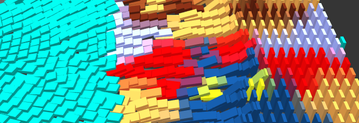
In Domino Party, you have one square meter board. Use the editor to populate it with domino tiles and share it with the world, so all the boards can be connected creating an infinite falling tiles stream. Built with Vue.js and Three.js.
GitHub
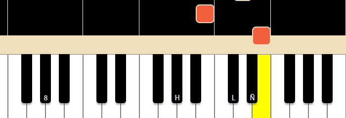
In Piano Hero, you can connect your MIDI device to your computer, load a MIDI file and follow the song trying to press the right key at the right time. Built with Vue.js.
GitHub
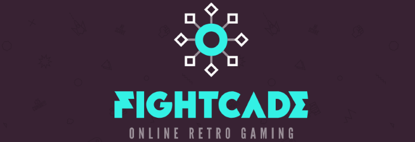
Fightcade is a network gaming platform for retro games. I mainly worked in the front-end that was built with Vue.js.
More information
This Game Boy Emulator was created in C++ from scratch in a series of live coding videos.
GitHub
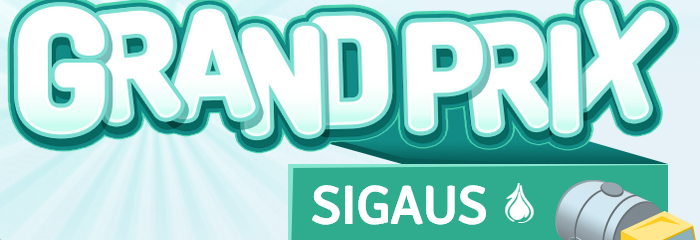
Sigaus is a nonprofit organization that coordinates a system of collecting and recycling industrial oil used in Spain. We created a series of minigames to raise awareness about the importance of recycling. Built with Javascript, Phaser and Google Application Engine.
More information
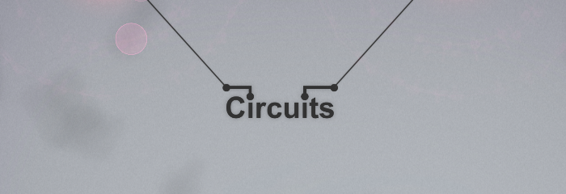
Circuits is a musical puzzle game for iOS, Windows, Mac and Linux built with Unity. Music and levels have been created by David García.
More information
Available on Steam
Deadlight is a 2.5D sidescroller platform game for Xbox 360 and PC built with Unreal Engine by Tequila Works.
More information
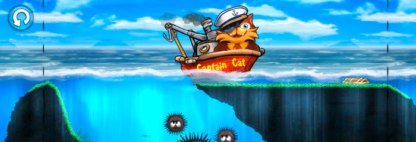
Captain Cat was our first game in Digital Tentacle. It was released on iPad and iPhone and Android in China. It was built with Unity.
Trailer on Youtube
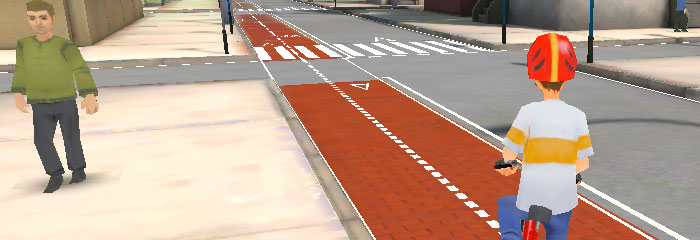
Biko is a set of two games to teach students of different ages how to drive a vehicle on the road. There were built with Unity.
More information
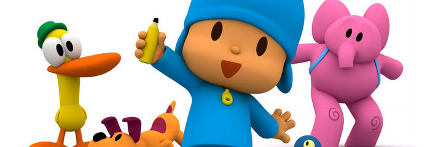
In my time at Zinkia I worked on two Pocoyo games for the Nintendo DS. The first one, Hello Pocoyo, was an adventure in which you can control 4 characters to resolve puzzles. The second one, Pocoyo Racing, was a racing game inspired by Mario Kart.
Hello Pocoyo on Youtube
Pocoyo Racing (Wii version) on Youtube
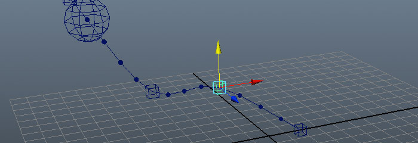
Maya Scripts. Set of scripts for Autodesk Maya built with Python.
More information
GitHub
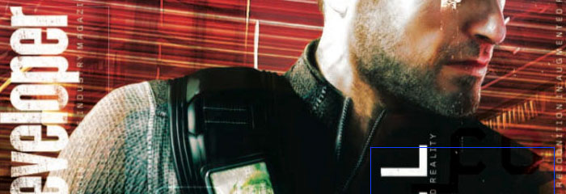
Electric Eye. I wrote this article about pattern recognition in augmented reality using OpenCV published in the Game Developer Magazine in December 2010.
View issue
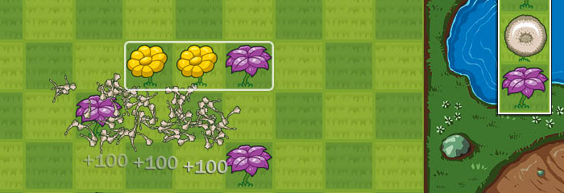
Flowermania is a match-3 game for Windows and Macintosh. Built with C++ using the Playground SDK from PlayFirst as the game engine.
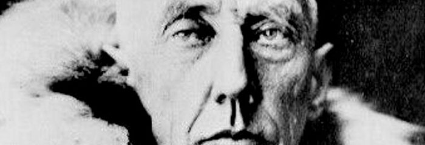
Amundsen is a game engine plus a game editor built with C++ to create classic 2D point and click adventure games.
More information
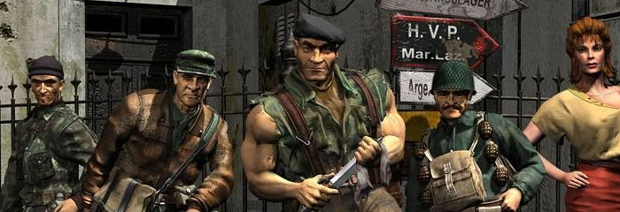
I worked at Pyro Studios on Commandos 2, Commandos 3 and Commandos Strike Force as a senior programmer.
Commandos 2 on Youtube
Commandos 3 on Youtube
Commandos Strike Force on Youtube
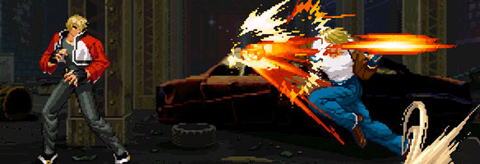
Garou - Mark of the wolves. A fighting game.
More information